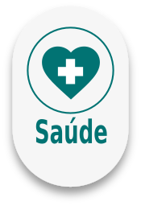
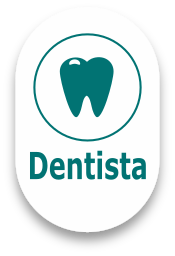
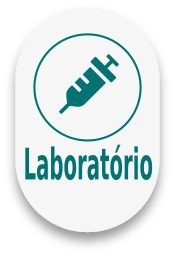
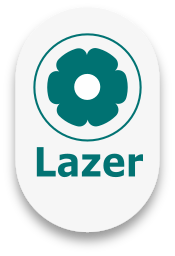
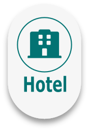
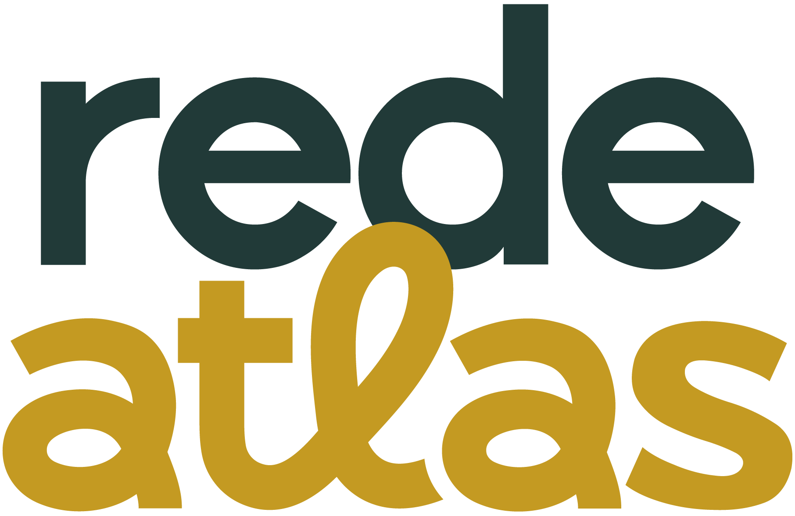

Cuidar de quem você ama. Todos os dias.
Amparo para sua família quando mais precisa. Saúde, lazer e bem-estar para aproveitar a vida, com a Rede de Vantagens Atlas.
Assistência 24h e acolhimento no Vale do Paraíba
Amparo para sua família quando mais precisa. Saúde, lazer e bem-estar para aproveitar a vida, com a Rede de Vantagens Atlas.
Com a Rede Atlas, sua família tem amparo completo quando mais precisa e, no dia a dia, acesso a descontos em médicos, dentistas, academias, hotéis e clubes.
Da organização ao velório, sem burocracia para a família.
Cobertura de translado conforme o plano escolhido.
Familiares distantes podem participar da despedida.
Descontos em saúde, lazer e serviços na sua cidade.

Saúde
OdontologiaFarmácias
Exames
Lazer
HospedagemEncontre parceiros na sua cidade e aproveite as condições especiais do seu plano.
A entrada corresponde à primeira mensalidade do plano.
Consulte a equipe Atlas para conhecer as condições e coberturas de cada plano.
Hospitais, clínicas, laboratórios, farmácias, clubes e pousadas parceiras com condições especiais para clientes Atlas.
Estrutura própria de cremação, com acolhimento e respeito em cada etapa. Disponível nos planos Platinum, e também para pets nos planos + Pet.
Nossa equipe orienta a família desde o primeiro contato.
Documentação, translado e preparação sem burocracia.
Velório presencial ou online e cremação no Crematório Atlas.
Ligação gratuita, todos os dias, a qualquer hora.
Ligar agora(12) 3122-1765 · Horário comercial
(12) 3153-2984 · Horário comercial
(12) 3103-6083 · Horário comercial
Acesse sua conta, conheça os parceiros e encontre os canais de assistência no portal da Rede Atlas.

Seu cuidado, sempre perto.Meu planoRede de VantagensAssistência 24h